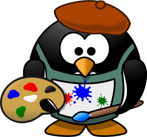

James Madison University, Fall 2017 Semester
Lab19: Passing and returning objects

Background
For this lab you are going to create a class named Color149. Java already comes with its own Color class (check out the documentation and source code), but we are going to create a simple variant of that class. This lab was designed by Prof. Arch Harris.
Objectives
Implement methods that accept objects as parameters.
Implement methods that return an object of the class.
Part 1: Getting Started
-
Download a copy of Main.java. This file implements the main method you will use to test your implementation of Color149.
-
Download a copy of Color149.java. Read the documentation for the Color149 class that this file implements.
-
You will run today's program from the command line. Recall that to use java from the command line, you must first change your working directory to be the location that holds your java files.
-
If you have already compiled your java files in DrJava, you do NOT need to compile them again. But if you want to compile your java files from the command line, enter the following command.
javac *.java
If you have many errors and want to limit the number of error messages displayed, enter the following alternative command.
javac *.java 2>&1 | head -20
-
Normally, to run a java program that has the main method in a file named Main.java, you would run the following command.
java Main
But instead of sending the program output to the screen, we want the output to go to a file. So run today's lab with the following command.
java Main > output.html
This will create a file named output.html which you should view in a web browser.
Part 2: Implementation
-
Look at the parts of Color149 that have already been completed.
A number of constants have been defined. Those constants are public so they may be used outside of the class (you should note those constants are referenced in Main.java).
Three instance variables are defined. Thus every object that is created will have its own copy of those three instance variables. Those instance variables are private so they can only be accessed by methods in the class.
The methods
toString,add, anddimhave already been defined. Look at those methods and ask questions about anything that you do not understand.
-
Implement the constructor. Recall that a constructor's job is to initialize an object to a particular state. In this lab, your color class's state will not change after it is initially created. Compile your java files and run the main program as specified below. The top portion of the html file that outputs the constants should work properly after you complete the constructor.
-
Implement the other methods, one at a time. Rerun the program after implementing each method to test the implemented method. Make sure a method is working correctly before moving on to the next method.
-
When you have everything working, open two browser windows: one with your web page and one with the sample output page. Ask a TA or instructor to verify that your program produces the correct output.
Submit your Color149.java file via Canvas by the end of the day.